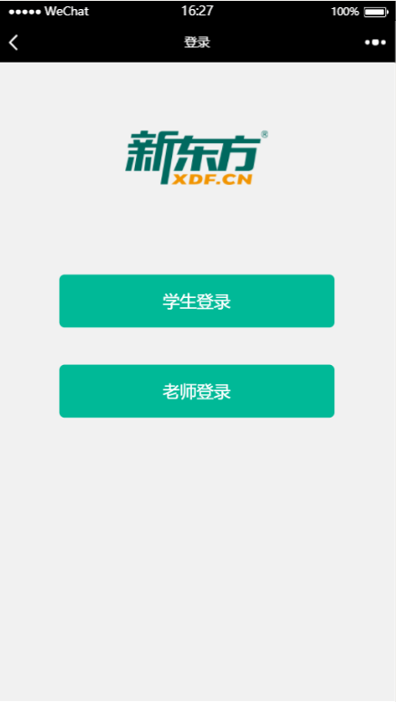
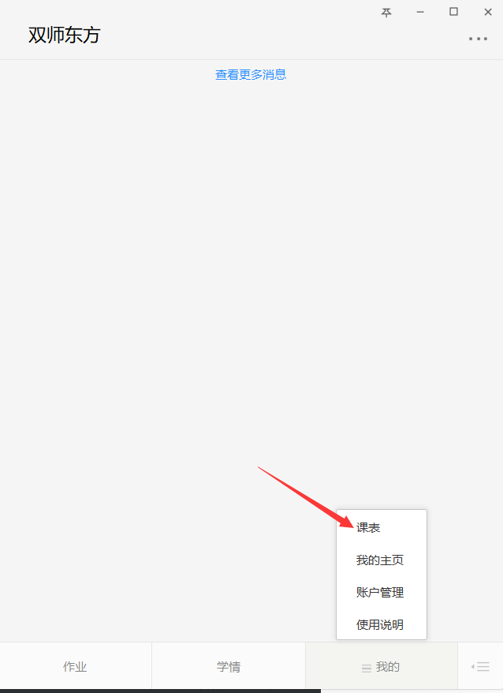
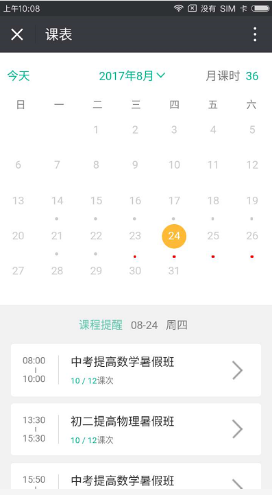

1.教师账号绑定与退出
1.1教师登录页面
用户关注东方双师微信公众号后，进入公众号主页面如图所示。
单击“我的”，则可看到“账号”选项。如图所示。
选择点击“账号”按钮，则进入到登录页面。如图所示。
进入登录页面后，点击右下角“教师登录”按钮，则跳转至教师登录页面。如图所示。
1.2教师其他方式登录
进入东方双师微信公众号主页面。如图所示。
点击“作业”“学情”“课表”任一按钮，则会跳转至登录页面。如图所示。
1.3 教师账号绑定
前往教师登录页面，在输入框内输入教师的账号信息。如图所示。
点击“登录”按钮，则进行教师账号与微信号绑定。绑定成功时如图所示。
账号信息有误，绑定失败时如图2.2-3所示。
1.4 教师账号退出
进入服务号主页面，点击“我的”下“账号”按钮则跳转至当前登录账号信息展示页 如图所示。
点击“退出登录”,则进行微信号与当前登录账户解绑。退出成功后页面跳转至登录页如图所示。
点击“登录”按钮，则进行教师账号与微信号绑定。绑定成功时如图所示。
2课表功能
2.1课表页面
教师账号绑定后，返回到微信公众号主页面点击右下角“我的”选择“课表”功能。如图所示。
单击“我的”，则可看到“账号”选项。如图所示。
点击后页面跳转至课表主页面，默认展示当天日期的课程信息。如图所示。
字段释义：
“今天” 点击后日历定位到当天的日期
“月课时” 当前所选月份所有课次总和
“课程提醒” 当前所选日期的课次信息
2.1.1日历控件
2.1.1.1按月份查询
点击“2017年8月”后的符号“∨”，会有日历筛选弹窗弹出，在此可以选择需要查看课程的月份，然后点击“确定”即可跳转至所选月份 页面数据也随之变换。左右滑动日历也可切换月份。如图所示。
字段释义：
“回到今天” 点击后所选月份信息变换为当前所在的月份
2.1.1.2按日期查询
进入课表页面，日期默认选择当前日期，并以绿色圆圈标识。如图所示。
点击想要查看的日期，即可切换到所选日期。当所选日期为今天之前的日期圆圈会以灰色进行标识。如图所示：
点击“作业”“学情”“课表”任一按钮，则会跳转至登录页面。如图所示。
当所选日期为未来的某一天时，圆圈会有黄色进行标识。如图3.2-4所示。
点击“登录”按钮，则进行教师账号与微信号绑定。绑定成功时如图所示。
2.1.2课程提醒
2.1.2.1所选日期有课程提醒
所选日期有课次时，日期底部会有“。”标识。且底部“课程提醒”会展示当天的日期、星期、课次信息。课次信息展示数据为：上课时间，班级名称，当前课次/总课次。

所选日期为当天之前且有课时，“。”会以灰色标识且课程提醒课次信息为灰色。如图所示。
所选日期大于今天且有课的情况下，“。”会以红色标识。如图所示。
2.1.2.2所选日期无课程提醒
所选日期无课程时，日期底部为空白不会有“。”标识出现且底部无“课程信息”数据。如图3.3-4所示。
2.1.3课程详情
2.1.3.1课程详情页面信息
点击课程提醒中的某一课次，即可跳转至对应的课程详情页面。 页面展示信息为：班级名称（科目）、上课时间、班级的开课至结课日期、课时进度、主讲，班主任信息、课堂学生信息。如图所示。
2.1.3.2课堂同学列表
点击“课堂学生”右侧的“＞”符号进入课堂学生列表。展示当前班级的同学信息、班主任信息、班号。学员默认按首字母顺序排列。如图所示。
2.1.4查看学情
可以通过“课堂学生”下的“查看学情”按钮点击查看学情，也可通过“课堂同学列表”学员信息右侧的标识点击查看。如图所示。
3.学情功能
3.1进入学情页面
微信公众号主页面，点击“学情”按钮则跳转至学情页面，默认展示成绩报告页面数据信息，未有成绩录入的班级不展示。如图所示。
3.2查看成绩报告
成绩报告页面班级排序按时间倒序排序，点击班级名称后的符号“∨”可对班级数据进行展开，点击“∧”进行折叠。坐标轴中为班级的成绩信息数据，红色为“入门测”成绩，蓝色为“出门测”成绩，X轴为课次，Y轴为分数。点击某一节点即可查看对应课次的班级出入门测成绩。如图所示。
3.3成绩排名
打开班级学情成绩后，点击右下角的“查看成绩盘排名”查看学员成绩。页面会展示学员当前课次的排名、成绩得分、与上一次得分相比的浮动、与上一次排名相比的浮动。如图所示。
查看成绩为最近一次的得分情况，若查看历史得分点击学员姓名后的符号“〉”可查看该学员的历史课次成绩。如图所示。
3.4分享成绩排行
3.4.1学院筛选
查看学员成绩页面，默认勾选所有学员信息，也可点击取消学员姓名前的“√”，点击“名次浮动”后的按钮进行成绩分享。成绩排行榜页面会展示所勾选学员的成绩信息，以及班级名称、班主任信息、满分、课次时间、出入门测类型。如图所示。
3.4.2分享排行榜
分享页面长按当前页面，会有弹窗弹出。选择所需的分享方式进行分享。如图所示。
3.5成绩录入
3.5.1进入成绩录入页面
进入学情主页面，点击页面title“录成绩”，页面跳转至成绩录入页面。默认展示成绩类型、班级、课次及时间、满分。如图所示。
3.5.2录入成绩
选择要录入的成绩类型，选择班级信息，选择对应的课次，设置满分后即可对学员进行打分。如图所示。
在“请录入分数”输入框内输入要打的分数，然后点击学员icon即可对该学员进行打分。如图所示。
3.5.3添加学生
点击添加学生按钮，有弹窗弹出填写完需要添加的学员信息后点击确定即可添加成功且新添加的学员icon为红色。添加一次当前班级所有课次都会有该同学信息。如图所示。
4作业功能
4.1布置作业
4.1.1进入布置作业页面
进入微信公众号主页面，点击底部的“作业”功能，页面跳转至作业主页面。点击页面title的“布置作业”进入布置作业页面。如图所示。
4..1.2布置作业
进入布置作业页面后，选择班级、作业时间、以及知识点、作业描述、上传图片、语音、点击“提交”进行作业布置。如图所示。
4.2作业列表
4.2.1进入作业列表页面
进入微信公众号主页面，点击底部的“作业”功能，页面跳转至作业主页面。默认展示作业列表数据。班级排序按时间倒序排序，作业排序按时间顺序排序。当有新的未读提醒时会有红色圆点标识。如图所示。
4.3批改作业
点击课次详情右侧的“查看”，页面跳转至批复页面。展示待批复、已批复、未交作业的学员信息。如图5.2-2所示。
点击待批复学员/已批复学员的icon即可进入作业修改页面，可以回复文字、语音、图片。也可直接点击学员上传的图片进行在线编辑。如图所示。

4.4优秀作业
在批改作业作业时，点击“优秀”标识可以设置优秀作业。设置完成后作业列表页面也会有优秀标识。如图所示。
点击“分享优秀作业”按钮，可以进行优秀作业分享。点击后页面跳转到分享作业页面，展示学员的答题信息。如图所示。
4.5催交作业
批复页面点击未交作业右侧的“催交作业”，会对未交作业的学员发消息推送提醒交作业。如图所示。